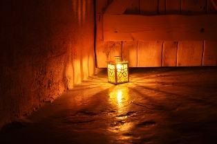
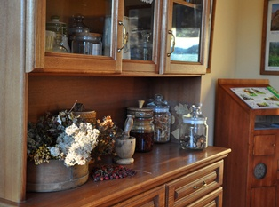
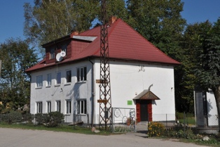
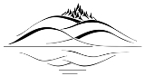
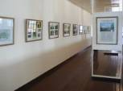
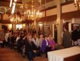
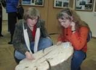
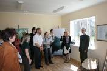

Экспозиция
Виштынецкого эколого-исторического музея
Виштынецкого эколого-исторического музея
Музейную экспозицию можно назвать лицом музея. Словно лицо человека она открыта для всех. Улыбается он или грустит, приглашает в гости или хочет сказать что-то очень важное, собеседник без труда почувствует его настроение.
Экспозиция нашего музея может поведать Вам удивительные истории об одном из легендарных мест Восточной Пруссии – Роминтской пуще, Виштынецкой возвышенности и озере Виштынецком. Именно она раскроет тайны необыкновенного природного разнообразия и красоты этих мест, их сложной судьбы. С помощью неё Вы сможете совершить путешествие во времени и пространстве от истории формирования рельефа исполинскими ледниками и подземного мира до самых высоких холмов и деревьев Калининградской области, до времён, когда на возвышенность впервые пришёл человек, о Великой пустоши, населённой медведями и зубрами, о королевских охотах в Роминтской пуще и оживлённом перекрёстке разных культур и народов. Она расскажет Вам об уникальности одного из заповедных уголков нашей планеты и необходимости его сохранения.




Экспозиция экомузея словно живой организм, постоянно растущий и совершенствующийся, дополняющийся новыми экспонатами. Она не стоит на месте не в прямом, не в переносном смысле: она растёт, меняется, обретая новых друзей в лице посетителей и специалистов. Восемь лет она путешествовала по Калининградской области пока не обрела своё постоянное место в посёлке Краснолесье.
Её путь начался с фотовыставки "Роминтская пуща: между прошлым и будущим", которая открылась 14 февраля 2002 года в отделе Природы Калининградского областного историко-художественного музея. Тогда многие калининградцы впервые узнали о Виштынецкой возвышенности, Роминтской пуще, её увлекательной истории и великолепной природе. Через полгода, 3 августа, в музее Кристийонаса Донелайтиса под хоровое пение выставку встречали местные жители посёлка Чистые Пруды, литовские гости и граждане Германии, покинувшие эти края полвека назад. Среди них почётным гостем был доктор Вольфганг Роте, чьи фотографии также послужили основой для фотовыставки. В начале 2004 года её смогли увидеть и жители города Нестерова, самого восточного в Калининградской области.
Каждый раз, переезжая с места на место, фотовыставка изменялась, дополнялась новыми материалами. И 22 мая 2004 года она снова была представлена в стенах старинной кирхи, где 250 лет назад жил и творил классик литовской поэзии Кристийонас Донелайтис. Фотовыставка, перерождённая и дополненная экспонатами стала полноценной экспозицией, повествующей об истории Виштынецкой возвышенности со времён ледниковой эпохи, рассказывающей о природе и человеке, о любви и горе, о красоте и радости, о прошлом и будущем этой прекрасной земли - Виштынецкой возвышенности.
Её путь начался с фотовыставки "Роминтская пуща: между прошлым и будущим", которая открылась 14 февраля 2002 года в отделе Природы Калининградского областного историко-художественного музея. Тогда многие калининградцы впервые узнали о Виштынецкой возвышенности, Роминтской пуще, её увлекательной истории и великолепной природе. Через полгода, 3 августа, в музее Кристийонаса Донелайтиса под хоровое пение выставку встречали местные жители посёлка Чистые Пруды, литовские гости и граждане Германии, покинувшие эти края полвека назад. Среди них почётным гостем был доктор Вольфганг Роте, чьи фотографии также послужили основой для фотовыставки. В начале 2004 года её смогли увидеть и жители города Нестерова, самого восточного в Калининградской области.
Каждый раз, переезжая с места на место, фотовыставка изменялась, дополнялась новыми материалами. И 22 мая 2004 года она снова была представлена в стенах старинной кирхи, где 250 лет назад жил и творил классик литовской поэзии Кристийонас Донелайтис. Фотовыставка, перерождённая и дополненная экспонатами стала полноценной экспозицией, повествующей об истории Виштынецкой возвышенности со времён ледниковой эпохи, рассказывающей о природе и человеке, о любви и горе, о красоте и радости, о прошлом и будущем этой прекрасной земли - Виштынецкой возвышенности.

Экспозиция музея работает на постоянной основе в посёлке Краснолесье в музейно-информационном центре общественного учреждения "Виштынецкий эколого-исторический музей" по адресу:
238023, Калининградская область, Нестеровский район,
пос. Краснолесье, ул. Школьная, 5-А.
Время работы:
вторник - воскресенье с 10 до 18 часов
понедельник - выходной
Контакт для предварительной записи организованных групп:
тел.: +7-906-212-68-23 Алексей Соколов
238023, Калининградская область, Нестеровский район,
пос. Краснолесье, ул. Школьная, 5-А.
Время работы:
вторник - воскресенье с 10 до 18 часов
понедельник - выходной
Контакт для предварительной записи организованных групп:
тел.: +7-906-212-68-23 Алексей Соколов

Из истории
экспозиции:
экспозиции:


Работа экспозиции в Калининградском государственном техническом университете
март-май 2005 г.
март-май 2005 г.


